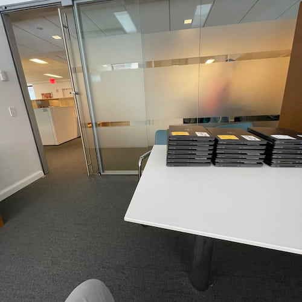
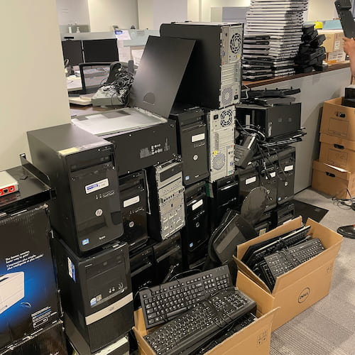
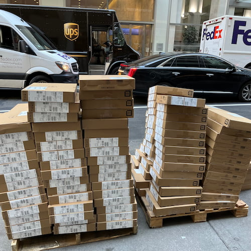
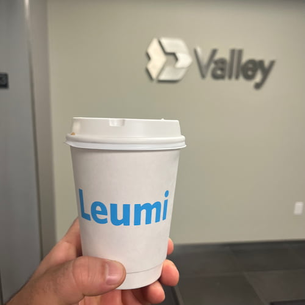
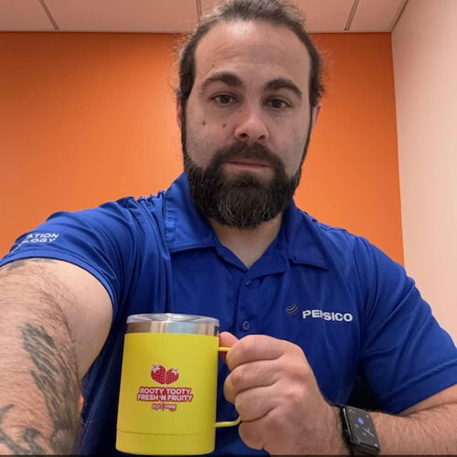
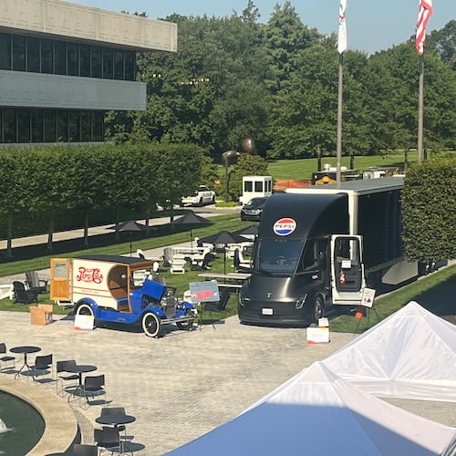
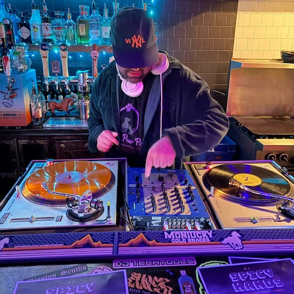
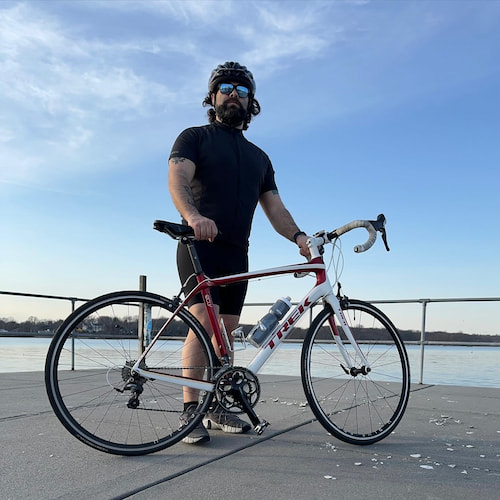

Who am I?
The Basics
I am a second year MSCS-Align student at Northeastern University's Khoury College of Computer Science with a strong history in customer facing relations and support roles. I bring my client first approach, strong communications skills and track record for service excellence to whatever I set my mind on accomplishing.
The Story
Background
Growing up in the 90's and early 2000's means I was around for the boom in home internet access, cyber-cafe culture, and the evolution of video games from the 8-bit to 16-bit era. I also lived through the evolution of home computing from the DOS era, my first family PC, to Windows 3.1 and later to 98. I was privileged to experience dialing up to AOL for the first time, downloading my first mp3 from Napster, and later playing online games on sites like Shockwave and Candystand. The spirit of these sites is what I would love to bring to this page here. I was always excited by tech but never learned what was going on behind the curtain. Which is why now I am pursuing my MSCS degree.
Education
Highschool and Undergrad
I grew up in Scarsdale and attended Scarsdale High School. After graduating I went on to college at SUNY Plattsburgh where eventually received my Bachelors of Science degree in Hotel, Restaurant and Tourism Management from the School of Business and Economics and minoring in Business.
Google IT Certificate
After several years of working in the service industry where I developed the ability to truly understand, anticipate, and ultimately meet the needs and expectations of clients, I made the change to a career in IT by studying and obtaining a certificate on Coursera for the Google IT Professional Certificate in 2020. This was in part prompted by the pandemic shutting everything down and moving people at an accelerated rate to online marketplaces and the streaming space.
MSCS-Align at Northeastern University
After several years of working in IT support roles I finally made the decision to go back to university and gain a deeper understanding of the systems I had been supporting. I began my first year at NEU in September of 2025 and have been exposed to languages like Java, Python and C. Currently learning web-development with HTML, CSS, and Javascript. I am also currently studying DBMS tools like MySQL and relational database fundamentals. I also took a course on Cloud Computing where I was exposed to, and implemented solutions utilizing, Terraform, Docker, Github Actions, and various components of the AWS ecosystem. I look forward to graduating in December of 2027!
Professional
Bank Leumi
In 2021 I landed my first IT role: a three-month contract at Bank Leumi's Midtown Manhattan headquarters, preparing the office for a digital migration and a return to the office. Before the contract ended, I was asked to stay on in desktop support. I wore a lot of hats: walk-up help for anyone who needed it, setting up new hires' computers, retiring devices and managing large e-waste pickups with the recycler, and whatever troubleshooting came up in between.


Leumi Acquired by Valley National Bank
In summer 2022, Valley National Bank acquired Leumi's U.S. operations, and I was asked to help lead the migration that followed. I led a team of three, trained a colleague to take over my desktop support work, and spent my days deploying and testing equipment with users while sitting in meetings with technical and non-technical stakeholders from both banks. The merger had no shortage of problems, and that's where I realized my years in the service industry had given me my strongest skills: listening closely, communicating clearly, and solving problems while putting out fires. I stayed with Valley ultimately for two years before moving on to a better opportunity


HCL Tech at Pepsi Global HQ
In 2023 I was hired by a multinational IT firm called HCL Tech to fulfill their support contract with Pepsico at their global HQ in Purchase NY. I was to man their "Tech Bar". This was an incredibly fun place to work at a beautiful campus. My duties were a lot less varied here than they had been at Valley, but I gained foundational skills of triaging various tech issues with an emphasis for service with a quite often VIP customer base. Here again is where I realized that my ability to communicate with clients and ease their concerns and worries is what set me apart from my peers at the tech bar.


My other interests
On a personal level, things that make me tick and that I enjoy are collecting vintage electronics, exploring Seattle on my road bike, camping, and I also am a physical media only (vinyl and cd) DJ on weekends. I've been obsessively collecting music my whole life, and have recently turned that passion into a hobby where I stream live on Mixcloud and TikTok, and even book gigs around Seattle to perform live in front of an audience. Please feel free to check the contact page for links to my DJ content.

